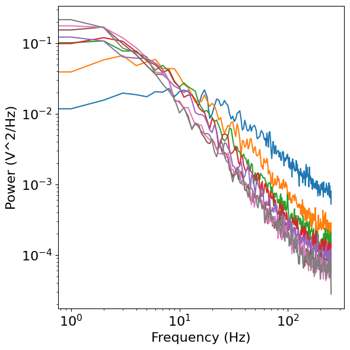

Contents
# Import custom code
import sys; from pathlib import Path
sys.path.append(str(Path('..').resolve()))
from apm.plts import plot_lines, plot_dots
/Users/tom/Code/Projects/APMethods/AperiodicMethods/apm/plts/data.py:7: DeprecationWarning:
The `fooof` package is being deprecated and replaced by the `specparam` (spectral parameterization) package.
This version of `fooof` (1.1) is fully functional, but will not be further updated.
New projects are recommended to update to using `specparam` (see Changelog for details).
from fooof.utils import trim_spectrum
import numpy as np
from neurodsp.sim import sim_synaptic_kernel, sim_synaptic_current
from neurodsp.spectral import compute_spectrum
from neurodsp.plts.spectral import plot_power_spectra
from fooof import FOOOF
from fooof.utils.params import compute_knee_frequency
fs = 2000.
t_sim = 2.
t_ker = np.arange(0,t_sim,1/fs)
t_r = 0
t_ds = np.arange(0.005,0.08,0.01)
f_to_plot=200
t_ds
array([0.005, 0.015, 0.025, 0.035, 0.045, 0.055, 0.065, 0.075])
upd_exp = lambda params, val : params.update({'exponent' : val})
# Set knee ranges - defined based on the `tau_d` parameter of synaptic current function
KNEES = np.arange(0.005, 0.08, 0.01)
# Update knee, based on setting the decay time constant
upd_knee = lambda params, val : params.update({'tau_d' : val})
KNEES
array([0.005, 0.015, 0.025, 0.035, 0.045, 0.055, 0.065, 0.075])
N_SECONDS = 30
FS = 500
sigs = []
for tau_d in KNEES:
sig = sim_synaptic_current(N_SECONDS, FS, tau_d=tau_d)
sigs.append(sig)
powers = []
for sig in sigs:
freqs, pows = compute_spectrum(sig, FS)
powers.append(pows)
plot_power_spectra(freqs, powers)

fm = FOOOF(max_n_peaks=0, aperiodic_mode='knee', verbose=False)
fm.fit(freqs, powers3)
fm.get_params('aperiodic', 'knee')
1.2220091723137636
fm.
kernels = []
# get synaptic kernels
for t_d in t_ds:
ker = sim.sim_synaptic_kernel(t_sim, fs, tau_r=t_r, tau_d=t_d)
kernels.append(ker/ker[0])
---------------------------------------------------------------------------
NameError Traceback (most recent call last)
Cell In[10], line 4
2 # get synaptic kernels
3 for t_d in t_ds:
----> 4 ker = sim.sim_synaptic_kernel(t_sim, fs, tau_r=t_r, tau_d=t_d)
5 kernels.append(ker/ker[0])
NameError: name 'sim' is not defined
alphas = []
fm = FOOOF(verbose=False)
for ind, sig in enumerate(all_data):
freqs, powers = compute_spectrum(sig, fs=fs, f_range=f_range)
fm.fit(freqs, powers)
alphas.append(np.max(fm.get_params('peak', 'PW')))
def save_figure(save_fig, file_name, file_path):
"""Save out a figure."""
if save_fig:
plt.tight_layout()
file_name = file_name + SAVE_EXT
if not os.path.isdir(os.path.join(APMDB().figs_path, file_path)):
os.mkdir(os.path.join(APMDB().figs_path, file_path))
plt.savefig(os.path.join(APMDB().figs_path, file_path, file_name))
def custom_psd_style(ax, **kwargs):
"""Define custom styling for the PSD plots."""
ax.set_xticks([], minor=True)
ax.set_yticks([], minor=True)
ax.axes.get_xaxis().set_ticks([])
ax.axes.get_yaxis().set_ticks([])
plt.tight_layout()
def sampler(values, probs=None):
"""Create a generator to sample from a parameter range."""
# Check that length of options is same as length of probs, if provided
if np.any(probs):
if len(inds) != len(probs):
raise ValueError("The number of options must match the number of probabilities.")
while True:
yield np.random.choice(values, p=probs)
def stepper(start, stop, step):
"""Create a generator to step across a parameter range.
Parameters
----------
start
"""
for val in np.arange(start, stop, step):
yield(val)
# def sample_vals(sim_params, sampler, update):
# """ """
# while True:
# val = next(sampler)
# update(sim_params, val)
# yield sim_params